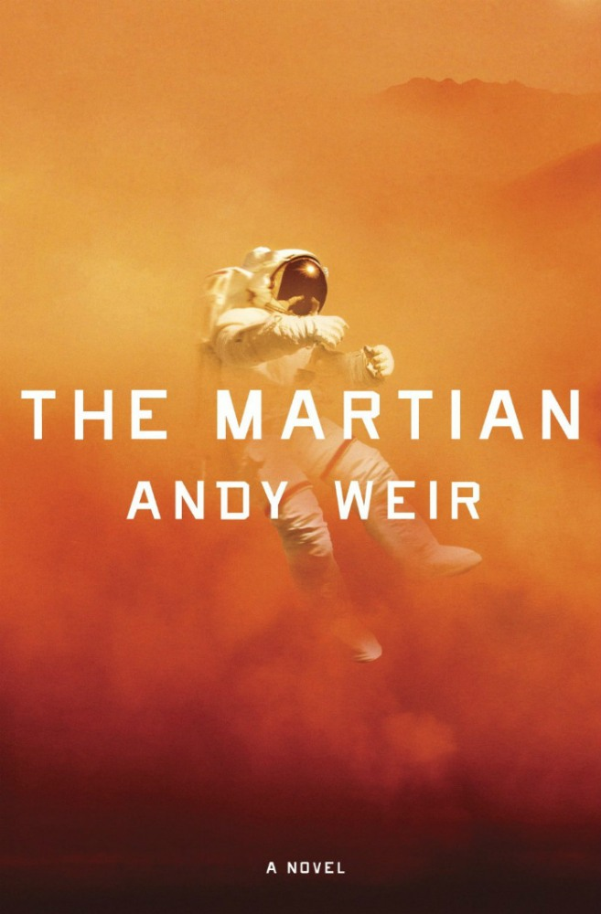
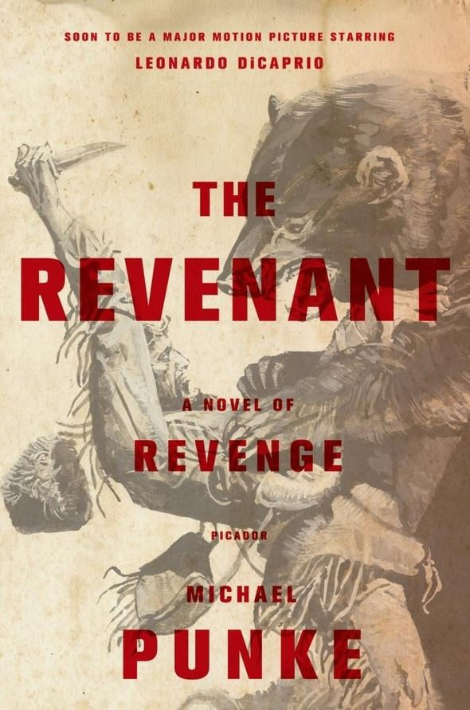
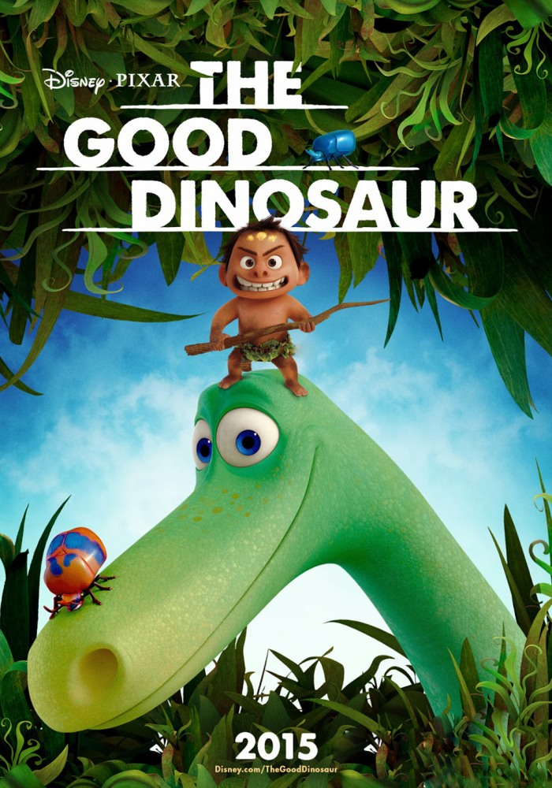

Ожидаемые фильмы
Марсианин
Премьера 26 ноября 2015
Марсианская миссия «Арес-3» в процессе работы была вынуждена экстренно покинуть планету из-за надвигающейся песчаной бури. Инженер и биолог Марк Уотни получил повреждение скафандра во время песчаной бури. Сотрудники миссии, посчитав его погибшим, эвакуировались с планеты, оставив Марка одного.Возвращенец
Премьера 28 января 2016
Действие развивается на Диком Западе в ХIX веке. Уроженец Филадельфии Хью Гласс попадает в плен к индейцам.Добропорядочный динозавр
Премьера 31 декабря 2015
По сюжету динозавры не вымерли, а эволюционировали в разумных существ и живут и здравствуют на Земле. А вот люди остались на довольно примитивной стадии развития. Фильм расскажет историю дружбы динозавра и маленького мальчика.Темные тайны
Премьера 13 августа 2015
Чудовищное преступление потрясло весь Канзас: в маленьком городке пятнадцатилетний подросток зверски убил собственную семью. Тогда чудом уцелела лишь семилетняя Либби. Двадцать четыре года спустя к девушке обращаются несколько детективов-любителей, уверенных в невиновности ее брата. Вместе с ними она начинает свое расследование.